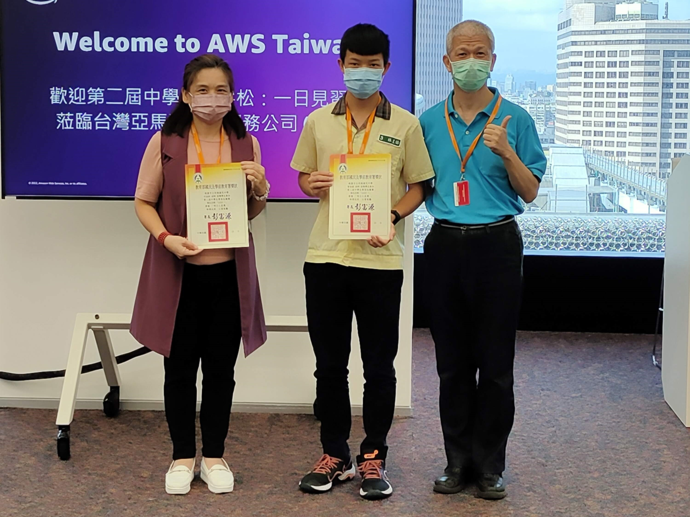

第二屆中學生黑客松
此競賽以生活化人工智慧加值雲端應用為主題，規定使用AWS雲端資源，並至少包含人工智慧相關之元素， 我們利用鏡頭獲取人臉資料後，透過AWS雲端運算利用機器學習進行模式識別，這是一個與高中組不分齡的比賽， 經過幾個月的賽程，最後以「行車輔助系統」榮獲明日之星獎(國中生只有2組得獎)，獲得到亞馬遜台灣分公司一日參訪資格。
此競賽以生活化人工智慧加值雲端應用為主題，規定使用AWS雲端資源，並至少包含人工智慧相關之元素， 我們利用鏡頭獲取人臉資料後，透過AWS雲端運算利用機器學習進行模式識別，這是一個與高中組不分齡的比賽， 經過幾個月的賽程，最後以「行車輔助系統」榮獲明日之星獎(國中生只有2組得獎)，獲得到亞馬遜台灣分公司一日參訪資格。